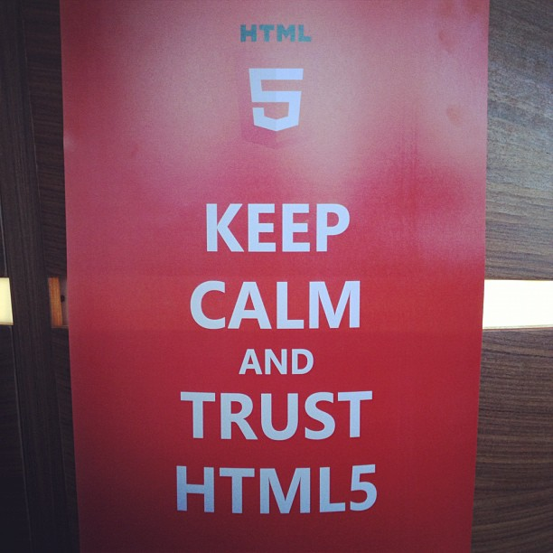
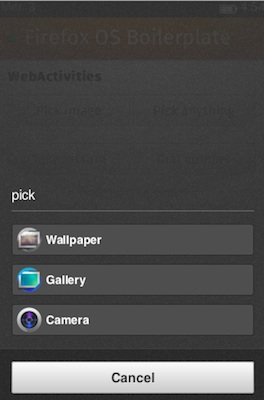
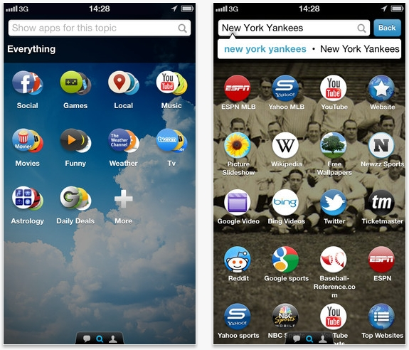
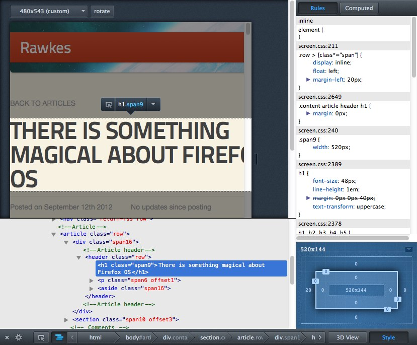

Firefox OS is the only fully open mobile operating system based on web standards
It is aimed at markets that don't have access to the current leading operating systems
It is fully web based, there is no native layer. Both the operating system and apps for it are written in HTML5. The hardware access happens via a Linux core that is the same that powers Android
HTML5 is a first class citizen in Firefox OS - it is the OS that keeps the promises others gave us some years ago (No SDK needed)
All you need to know to write an app for Firefox OS is to know HTML5
Firefox OS is live - we have end user phones being sold in Spain, Poland, Venezuela and Columbia
Firefox OS
The mobile platform HTML5 deserves

Predictable browser support
A new market
Upgrading the mobile world
Targeted at new, emerging markets
Very affordable hardware
No credit card needed - client billing
Web technologies through and through
18 mobile partners, 4 hardware partners
Everything in the OS is open web technology and standard proposals
Apps for Firefox OS are HTML5 apps with an extra manifest file
The manifest defines the extra access to hardware you require, the icons and the location of your code
They are secured by a three layer security model allowing more or less access depending on the location of the app (hosted vs. delivered from the marketplace)
They work offline and work across other platforms (when converted)
You can find and install them either from the web or the marketplace
Defined by manifest
{ "name": "My App", "description": "My elevator pitch goes here", "launch_path": "/", "icons": { "128": "/img/icon-128.png" }, "developer": { "name": "Your name or organization", "url": "http://your-homepage-here.org" }}
var installapp = navigator.mozApps.install(manifestURL);installapp.onsuccess = function(data) { // App is installed};installapp.onerror = function() { // App wasn't installed, info is in // installapp.error.name};
new, f.e type: “websms/sms” or “webcontacts/contact”
Sending a number to the phone
var call = new MozActivity({ name: "dial", data: { number: "+1804100100" }});
Get an image from the phone (1/2)

var getphoto = new MozActivity({ name: "pick", data: { type: ["image/png", "image/jpg", "image/jpeg"] }});
Get an image from the phone (2/2)
getphoto.onsuccess = function () { var img = document.createElement("img"); if (this.result.blob.type.indexOf("image") != -1) { img.src = window.URL.createObjectURL(this.result.blob); }};getphoto.onerror = function () { // error};
Dynamic app search
Dynamic app search
The search interface of Firefox OS does not only search names of apps and media content on your device
Instead, it matches searches with apps by topic.
For example, you can enter a film title and you find apps that deal with movies
These app results are localised to different markets, meaning that you don't find for example Netflix in countries where it isn't available.
Dynamic app search for end users
People don't need to know the name of the app, instead they search what they want to find
Apps are real "try before you buy": clicking an icon in the result list will open the mobile optimised web version of the app directly. No need to download, install and discard.
Once people are happy with trying the app they can long-tap to install the app and get all the open web app benefits
You can use apps once and never have to see them again - no clogging up of your device
Dynamic app search for developers
Your app gets found by what it does, not by its name or the expensive advertising you have to put into it.
The mobile optimised HTML5 version of your app is your ad – nothing gets wasted
You get users quickly to trying out the app without having to download and install it
You can become the first and most important local app for a certain topic without having to beat others in a closed marketplace
Use-case to app

Use-case to app
Tools
Tools for Firefox OS / HTML5
Unlike iOS and Android, there is no fixed SDK or set of IDEs/tools for Firefox OS.
Firefox OS apps are HTML5 apps, and we never had one definite set of tools for writing HTML
That said, there are some things to make your life easier and get you started more quickly
A lot of them come with the browser, or as add-ons to the browser. That way you can use the computer you are comfortable with to develop code
You do not need a Firefox OS device to get started – you might need one though to do interaction/performance testing
This is an ongoing thing – more tools to come :)
Tools for Firefox OS / HTML5
Mozilla has a few things brewing in the tools space
Make sure you show the developer tools in Firefox (NOT, I repeat NOT Firebug) and the responsive view which allows you to resize the canvas of the browser to phone size
Show the simulator live, change some of the CSS to show that apps are just like web sites
Point to the following resizes, make sure to tell people that the OS components are for Gaia - not for any app out there.
Browsers are editors

Firefox Developer tools
Developer tools are built into Firefox and provide a lot of the functionality that traditionally people needed to download and install Firebug for.
The developer tools are designed as a toolbox of different features for specialist use cases - not a kitchen sink approach of adding all features into one, crammed interface
This allows our developer tools to evolve without becoming overwhelming - not every developer needs the same features!
https://marketplace.firefox.com/developers/ - the developer Hub for marketplace, lots of information on how to design an app, demo apps for download and information how to submit your app.
 {Firstname}, {Lastname}, {Conference}, {Location}, {date}
{Firstname}, {Lastname}, {Conference}, {Location}, {date}